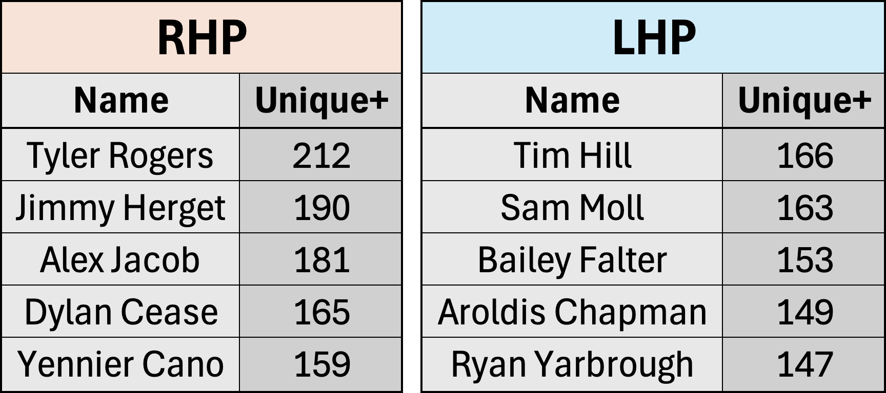
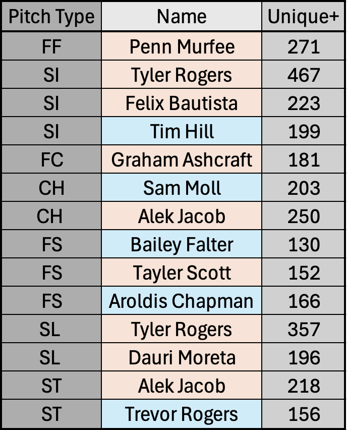

How Unique is a Pitcher?
March 2026
The creation of Statcast has fundamentally reshaped pitcher evaluation. Modern models such as Stuff+ estimate pitch quality directly from physical characteristics, including velocity, movement, spin, release traits, and extension, allowing teams to evaluate underlying skill independent of noisy run prevention outcomes. These types of models answer an essential question: how good is a pitcher’s stuff?
They do not, however, answer a different but also important question: how different is a pitcher from everyone else?
Two pitchers may have similar Stuff+ while having dramatically different heights, arm slots, movement profiles, etc (Ex. Mason Miller had an overall Stuff+ of 123 in 2025 and Tim Hill had a similar overall Stuff+ of 122 while being vastly different types of pitchers). From the perspective of scouting, hitter preparation, player development, and roster construction, this differentiation matters. Hitters prepare for archetypes, bullpens can be redundant, and development plans and player evaluation often involve identifying comparable pitchers with similar profiles.
This study introduces Unique+, a descriptive metric designed to quantify how unusual a pitcher’s overall pitch profile is relative to his peers. Unique+ is not optimized on performance outcomes, and its purpose is to measure stylistic differentiation in pitch profile space.
Constructing Unique+
For each pitcher-season, a high-dimensional feature vector was constructed from Statcast derived pitch characteristics. For each pitch type (FF, SI, FC, SL, CU, KC, CH, FS, SV, CS, FO, KN, ST), the following features were included:
- Average velocity
- Horizontal movement
- Vertical movement
- Spin rate
- Spin axis
- Extension
- Plate_x
- Plate_z
In addition, pitch usage indicators (has_* columns) and effective arm angle metrics (*_arm_angle_eff) were incorporated to capture arsenal composition and release geometry. All features were standardized within handedness (right- and left-handed pitchers separately) using z-scores.
The implementation follows a k-nearest neighbors structure:
- Distance metric: Euclidean
- Neighborhood size: K = 15
- Self-neighbor excluded
- Uniqueness score = mean distance to 15 nearest neighbors
To improve interpretability, raw scores are scaled relative to the handedness specific league average:
- 100 represents league-average stylistic proximity
- 120 indicates 20% greater than average structural differentiation
- 80 indicates closer than average proximity to peers
Unique+ is strictly descriptive. No outcome variables are utilized in its construction.
Structural Stability and Robustness
To determine if Unique+ reflected persistent structure rather than sampling noise, I utilized five seasons of data (2021-2025) and calculated a year to year Spearman correlation of 0.695 (p < 0.001). Stability was comparable across roles (0.693 for relievers, 0.659 for starters) and remained between approximately 0.63 and 0.68 across primary velocity ranges between 89 and 98 mph. These magnitudes indicate that Unique+ captures persistent stylistic traits.
Sensitivity to neighborhood size was evaluated by recomputing the metric for K = {3, 5, 10, 15, 20}. Spearman rank correlations across different values of K exceeded 0.98, and Pearson correlations of raw distances exceeded 0.98. Additionally, the ordering of top ranked pitchers remained unchanged for all values of K.
Alternative distance metric choices (Mahalanobis and cosine distance) produced similar but non identical archetype structures (Spearman approx. 0.73 between Euclidean and Mahalanobis). Euclidean distance was utilized for interpretability and stability.
The Most Unique Pitchers of 2025
Below are the five most unique right- and left-handed pitchers by Unique+ in 2025.

These pitchers do not necessarily represent the most effective arms in the league. Rather, they represent profiles for which close stylistic comps are hard to find in standardized pitch shape space.
Pitch-Level Examples
The same framework can also be applied at the pitch level by restricting the feature space to characteristics within a specific pitch type. This allows identification of individual offerings that are structurally distant from peers that throw the same pitch. Some pitches that stood out to me include:

It’s worth restating that uniqueness alone does not indicate effectiveness. Some pitches with high unique scores are unique for the wrong reasons and perform poorly as a result. Others, however, represent true “unicorns” (Taylor Rogers’s sinker and slider), pitches that are both unusual and highly effective.
Evaluation Against Run Prevention
To evaluate whether stylistic differentiation captures information beyond pitch quality, regression models were estimated with FIP as the dependent variable.
The base model:
FIP ∼ (Stuff+) + (Average Fastball Velocity)
produced R² = 0.2135.
Adding Unique+:
FIP ∼ (Stuff+) + (Average Fastball Velocity) + (Unique+)
increased R² to 0.2170 (ΔR² = 0.0035). The coefficient on Unique+ was −0.0036 (p = 0.00065).
A 10-point increase in Unique+ corresponds to approximately 0.036 lower FIP. The effect is statistically detectable but modest relative to the influence of Stuff+.
Including a Stuff+ × Unique+ interaction increased R² by 0.0012, with the interaction term marginally significant (p ≈ 0.05). The interaction magnitude is also small. These results indicate that stylistic differentiation explains a small residual component of run prevention after controlling for pitch quality and velocity.
Applications Beyond Run Prevention
While the explanatory power for FIP is limited, the framework underlying Unique+ has broader applications.
Because the metric is built on a k-nearest neighbors structure, it produces similarity relationships. For any given pitcher, the 15 nearest neighbors represent structurally comparable pitch profiles in standardized space. This allows for player comp identification based on movement, velocity, and release rather than outcomes.
In player development, a pitcher can be mapped into feature space and compared to historically successful pitchers occupying the same neighborhood. Differences in pitch utilization or sequencing can be examined among these similar arms to identify trends or utilization that could lead to more success.
At the pitch level, nearest neighbor comparisons allow for the identification of structurally similar pitches across the league. If two sliders share movement and release characteristics but produce different outcomes, where and when the pitch is thrown may explain the gap. Additionally, for underperforming pitchers, identifying successful fastball comps can help coaching staffs determine which movement profiles and pitch types a pitcher might want to target given their natural release.
The current implementation weighs all features equally in Euclidean space, however feature weighting can be implemented if certain characteristics are more important than others. Movement traits, release, velocity, or usage indicators can be emphasized depending on the application.
At the roster level, the same approach can quantify bullpen or rotation redundancy. A bullpen composed of pitchers occupying tightly clustered regions in feature space may lack stylistic diversity, whereas a bullpen spanning broader regions may provide greater matchup variability.
Thus, while Unique+ adds limited marginal predictive power for run prevention, it provides a structured representation of stylistic differentiation that can inform player evaluation, development, and roster construction.
Conclusion
Unique+ quantifies stylistic differentiation in standardized pitch profile space using Euclidean k-nearest neighbors. Across five seasons, it demonstrates strong year-to-year stability and robustness to neighborhood specification. While its incremental relationship with run prevention is modest, stylistic differentiation is measurable, persistent, and structurally meaningful. Unique+ does not replace Stuff+. It describes how a pitcher differs from his peers within the same quality tier, providing a framework that extends beyond performance prediction into comp identification, development strategy, and roster construction.